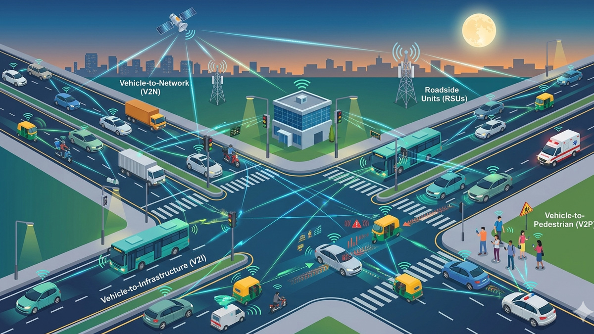
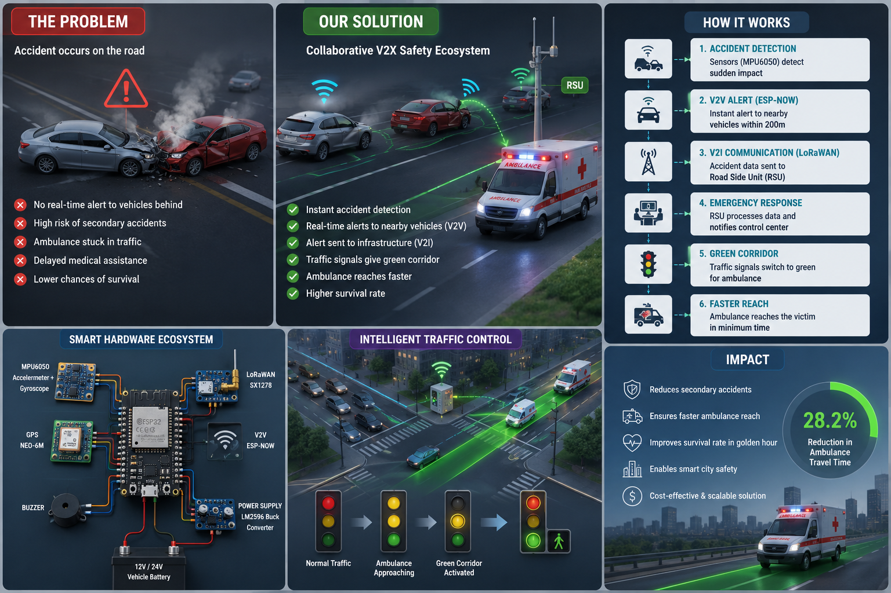
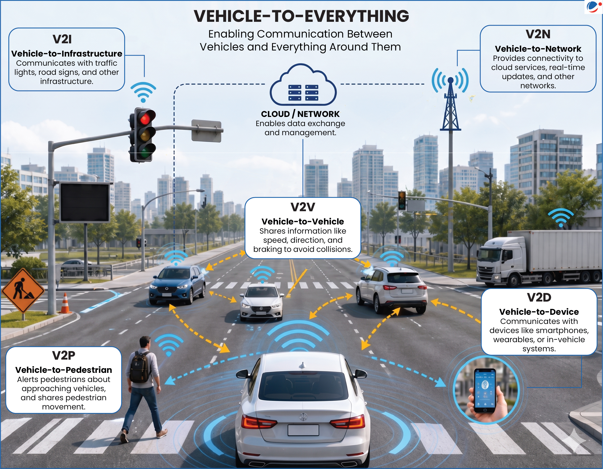

Multi-Layered Vehicular
Safety System using AI, ML, and CNN
An intelligent accident detection and response ecosystem that fuses sensor intelligence, AI decision-making, ML pattern detection, and CNN-based vision/audio analysis to reduce emergency response time during the Golden Hour.
Try AI Playground Explore ArchitectureProject Showcase
A closer look at the hardware integration, structural prototypes, and live deployment setup.




Problem Statement
Minutes matter—especially within the Golden Hour, when timely treatment significantly improves survival chances.
Why Road Accidents Are Critical
Accidents can cause severe trauma and internal injuries where early intervention is vital. Delays due to lack of awareness, poor communication, or traffic congestion lead to preventable fatalities.
- Golden Hour: first ~60 minutes are crucial for emergency care.
- Faster alerts: enables hospitals/police to respond quickly.
Why Traditional Systems Fail
Conventional approaches often rely on manual reporting, which is slow and error-prone. Single-sensor triggers can cause false alarms.
- Manual calling delays emergency response.
- False positives reduce system trust.
- No multi-layer verification (impact + sound + vision).
System Architecture
A layered pipeline: IoT sensing → edge processing (ESP32) → cloud intelligence → instant alerts.
Interactive 3D Layer Model. Hover to rotate.
Core Components
Accelerometer (G-force), GPS (Location), Microphone (Audio analysis).
Collects sensor streams, performs validation, and transmits data.
Runs ML/CNN models, stores logs, triggers workflows.
Automatically sends accident alerts containing GPS to emergency responders.
AI, ML, and CNN Models
Extracting spatial patterns in images and time-frequency patterns in spectrograms.
Decision Engine (AI)
Combines evidence from multiple sources (sensor thresholds, ML classification, CNN confidence) to decide whether to trigger emergency protocols automatically.
Pattern Detection (ML)
Analyzes numeric sensor streams to distinguish normal events from true accidents, improving accuracy over time with new training data.
Vision & Audio (CNN)
Classifies road-facing camera frames into accident vs non-accident. Analyzes audio spectrograms to identify distinctive crash frequency signatures.
AI Model Playground
Drag and drop your datasets below to test the AI inference engine live.
Model Settings
Drag & drop images here
or click to browse from computer
Processing via YOLOv8...
Inference Results
0 imagesConclusion & Future Scope
AI-enabled safety systems can transform emergency response, reduce fatalities, and power smart transportation.
Built with HTML • CSS • JS — Modern SaaS Theme, Responsive Layout, and Interactive Python AI Backend.